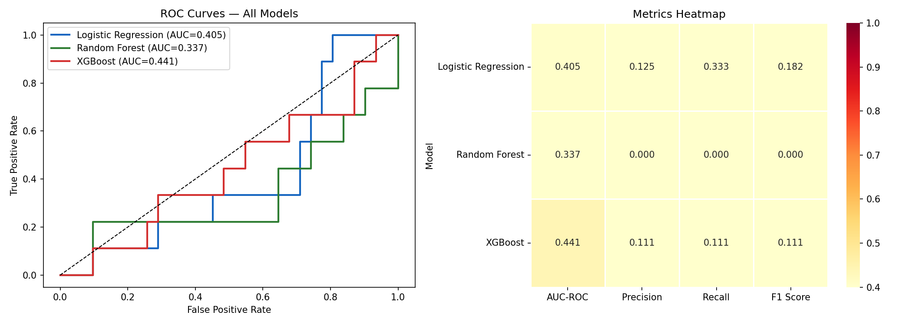
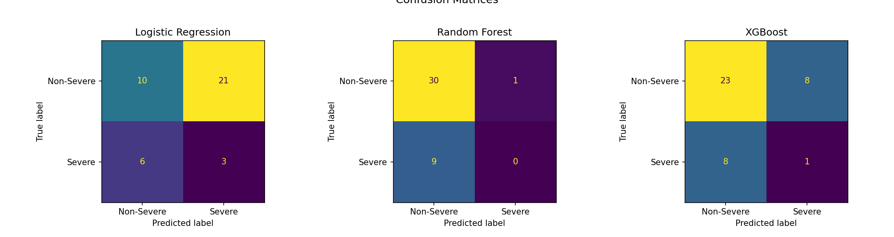
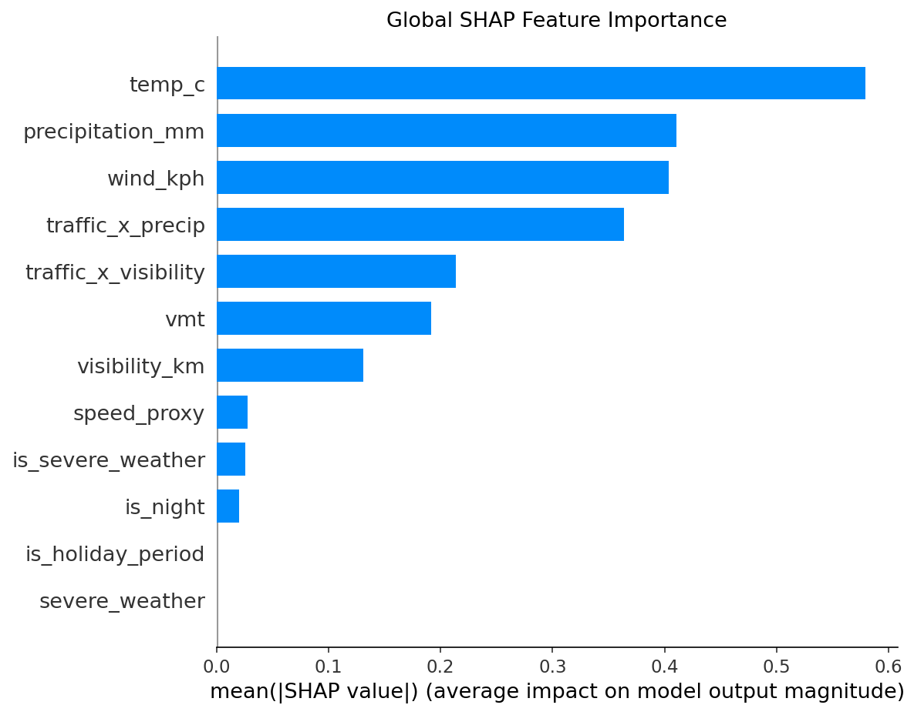

This system evaluates which observed provincial-corridor collisions are more likely to be severe using weather, traffic exposure, and collision-context features. It should be interpreted as a severity-prioritization tool, not a deterministic crash prediction engine.
This provincial-corridor subset is dominated by highway and ramp conditions, with severe collisions accounting for 21.8% of observed cases. The descriptive profile suggests that severity is not explained by traffic volume alone (Non-severe collisions had higher average AADT than severe collisions in this subset). Instead, severe outcomes appear to arise from the interaction of corridor context, environmental conditions, exposure structure, and event characteristics. The overnight severity pattern reinforces that some lower-volume periods may still carry elevated severity risk. This supports using the system as a risk-prioritization and monitoring tool rather than as a deterministic crash prediction engine.
Technical: This is the strongest ranking performance across the three candidate models.
Plain language: The model is reasonably good at sorting higher-risk cases above lower-risk ones, even if it is not a strong yes/no classifier.
NS relevance: This supports corridor prioritization and monitoring rather than deterministic crash prediction.
Technical: Severe collisions are the minority class in the modeled subset.
Plain language: Serious collisions matter a lot, but they are still a smaller share of all cases, which makes the prediction problem harder.
NS relevance: This explains why the project is evaluated with ROC/AUC and why threshold metrics should be interpreted cautiously.
Technical: XGBoost produced the best held-out discrimination among the candidate models.
Plain language: Out of the tested models, this one handled the problem best.
NS relevance: This suggests that severity risk depends on nonlinear combinations of weather, exposure, and collision context.
Technical: Temperature emerged as one of the strongest global predictors in the final model.
Plain language: Temperature seems to matter because it reflects broader operating conditions, not just one isolated factor.
NS relevance: This likely connects to seasonal transitions, freeze-thaw conditions, and changing corridor environments.
Technical: More than half of the modeled collisions occurred in highway-class settings.
Plain language: This dataset is heavily focused on highway corridor driving, not just local streets.
NS relevance: That strengthens the provincial corridor framing and the policy relevance of the results.
AUC-ROC measures how well the model ranks severe collisions above non-severe collisions across thresholds. XGBoost produced the strongest AUC among the candidate models.
This is the model's best overall "sorting ability." It is better than chance and stronger than the alternatives, but it is still far from perfect.
The model detects real signal in weather, exposure, and context, but severe collisions remain difficult to separate cleanly because many real-world factors interact at once.
Recall measures how many true severe collisions the model correctly identifies. Precision measures how often flagged severe cases are actually severe.
Recall is how good the model is at catching severe cases. Precision is how trustworthy the warnings are. We trade one for the other based on operational needs.
Higher recall matters when the cost of missing a severe-risk incident is high. Higher precision matters when monitoring and intervention resources are limited.
AUC: 0.604
Role: Interpretable Baseline
AUC: 0.574
Role: Nonlinear Ensemble
AUC: 0.642
Role: Gradient Boosting Champion
Used as the baseline because it is interpretable and provides a transparent benchmark for binary classification.
This is the clean, understandable starting point. It helps show that the problem is real, but more complex than a basic model can fully handle.
The model detected some severity signal, but the feature space was not cleanly separable with a linear decision boundary. This gives a grounded benchmark.
Used to test whether nonlinear rules and interaction effects could improve performance. It underperformed relative to expectation on the held-out test set.
A more complicated model is not automatically a better model.
This shows that increasing flexibility alone does not guarantee better generalization for road safety risk on provincial corridors.
Used as the most advanced candidate because boosting can focus on hard-to-classify cases and capture more complex feature interactions.
This was the best model, but it is still not predicting severe collisions perfectly.
The strongest severity signal appears to come from nonlinear combinations of weather, exposure, and collision context.


ROC shows how well each model separates severe from non-severe cases across decision thresholds.
This tells us which model sorts higher-risk cases better overall.
A model with better ROC performance can support better corridor-condition prioritization even when exact prediction remains difficult.
The matrix lets us compare models across multiple operational evaluation dimensions rather than relying on one aggregated number.
Different models can be better at different things, so we need to compare them from more than one angle.
Public-safety tools need balanced evaluation because the cost of missing severe cases and the cost of false alarms both matter heavily in resource allocation.
Model performance under clear conditions helps separate baseline visibility and road-environment effects from adverse-weather effects.
Some road situations are easier to classify than others. This condition changes how well the model sees risk.
This helps distinguish everyday corridor risk from winter or storm-driven risk. It clarifies whether the model depends entirely on adverse weather signals.
This subgroup isolates model behavior under reduced-light conditions. Night-time conditions may interact with visibility, fatigue, road context, and collision type.
Context matters as much as the raw event. Darker conditions inherently change how well the model estimates predictability.
Night driving on provincial corridors can change the severity environment through reduced visibility, lower support availability, and different traffic patterns.

Strong continuous environmental predictors. Precipitation acts as a direct weather-intensity indicator.
Temperature stands in for "what kind of road environment drivers are really facing." More precipitation usually means less forgiving roads.
Temperature proxies for seasonal transitions and freeze-thaw cycles. Rain, snow, and sleet are especially important on routes with variable seasonal surface conditions.
A key collision-structure variable. Interaction terms explicitly model how traffic exposure and environmental stress combine.
More vehicles mean a harder situation to recover from. Bad conditions become much worse when heavy traffic and bad weather happen together.
High traffic under poor visibility or precipitation creates localized exposure amplification. Corridor severity depends less on one factor alone and more on bad combinations.
Strong weather-related severity predictors that form specific terminal nodes in the decision forests.
Higher wind destabilizes driving, and when drivers see less, they have less time to react.
Relevant on open NS corridors and elevated stretches where wind amplifies instability. Fog and marine-adjacent conditions severely reduce hazard perception times.
The hotspot map highlights where the observed collision environment appears more severity-prone than average based on collision concentration, severe-collision count, and severity share within each grid cell.
This map shows where the collision environment looks more dangerous than usual, so those areas can get more attention from planners and safety teams.
This helps translate the model and descriptive patterns into a place-based road-safety picture for corridor planning, winter operations, and targeted safety investment.
The map supports corridor monitoring, roadway review, winter operations prioritization, signage review, and targeted safety attention. Critical and Elevated cells identify where provincial and municipal resources may yield the greatest safety return.
Across the three candidate models, XGBoost delivered the strongest held-out performance, but overall discrimination remained moderate. This indicates that severe collision outcomes are partly predictable, though not cleanly separable, within the available provincial-corridor feature set.
The strongest signals came from environmental and exposure-related variables, especially temperature, wind speed, traffic volume, and traffic-weather interaction effects. In contrast, isolated behavioral indicators contributed less than expected, which may reflect weaker signal quality, underreporting, or lower measurement precision.
Taken together, the results support a practical interpretation of the system as a risk-prioritization tool rather than a deterministic prediction engine. Its most defensible value lies in helping provincial and municipal decision-makers identify corridor conditions that deserve closer monitoring, more responsive intervention, and more targeted resource allocation.
The model suggests that severe-collision management may benefit from shifting from static road-safety interpretation toward condition-sensitive corridor monitoring.
Three implications stand out:
Future policy development could be strengthened by integrating privacy-protected travel-pattern data from external partners. This would allow the model to move beyond general corridor monitoring and toward more tailored safety planning for population groups with distinct mobility patterns, including older adults, youth, athletes, and frequent inter-regional travelers.
This model should not be interpreted as proving causal relationships or municipal failure. It is a severity-classification system built on observed collision records and approximate exposure/context variables.
Important constraints include:
Accordingly, the model is best used as a policy-support and prioritization layer, not as a standalone decision rule.
At a simple level, this project showed that serious collisions are hard to predict cleanly because many things are happening at once. Even after adding weather, road context, traffic exposure, and crash-structure features, the severe and non-severe cases still overlap a lot. That means the models can find patterns, but the patterns are not strong enough to create near-perfect separation.
What this taught us is: